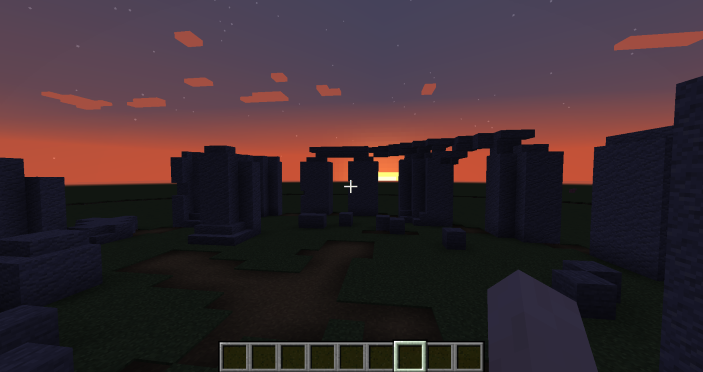
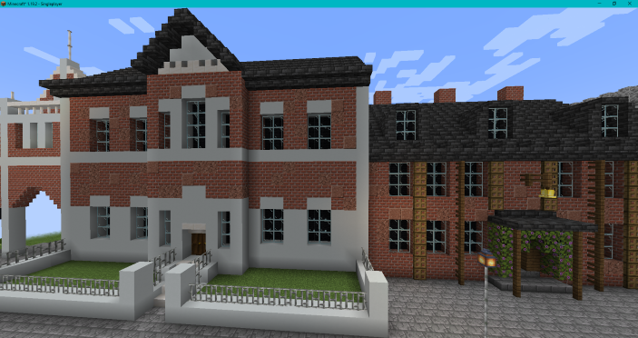
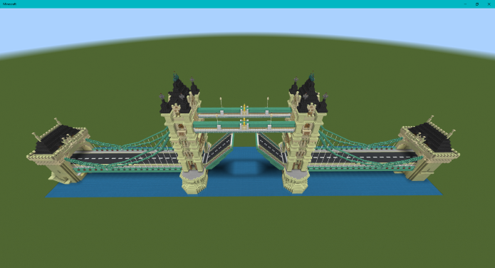

-
Stonehenge
A Minecraft recreation of Stonehenge at sunset.
-
Produced in Minecraft - Java Edition
- To find out more about Stonehenge, visit the English Heritage website.
Back to Top -
-
Old Aylesbury Market Square
A Minecraft recreation of Aylesbury town's market square, circa 1910's.
-
Produced in Minecraft - Java Edition
- To find out more about Aylesbury and it's history, visit the Aylesbury Remembered website.
Back to Top -
-
Tower Bridge, London
A Minecraft recreation of Tower Bridge in London.
-
Produced in Minecraft - Java Edition
- To find out more about Tower Bridge, visit the Tower Bridge website.
Back to Top -